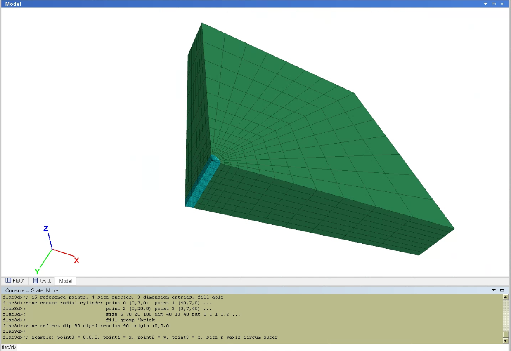

1 KAIST Model
1.1 Grid Generation
; radial-cylinder
; create a radially graded mesh around cylindrical-shaped tunnel
; 12 reference points, 4 size entries, 4 dimension entries, fill-able
zone create radial-cylinder point 0 (0,0,0) point 1 (40000,0,0) ...
point 2 (0,7450,0) point 3 (0,0,40000) ...
size 1000 7450 1570 40000 rat 1 1 1 1.2 ...
fill group 'shaft'
zone reflect dip 90 dip-direction 90 origin (0,0,0)
; radial-brick
; create a radially graded mesh around brick
; 15 reference points, 4 size entries, 3 dimension entries, fill-able
zone create radial-cylinder point 0 (0,7450,0) point 1 (40000,0,0) ...
point 2 (0,20000,0) point 3 (0,0,40000) ...
size 1000 12550 1570 40000 rat 1 1 1 1.2 ...
fill group 'brick'
zone reflect dip 90 dip-direction 90 origin (0,0,0)